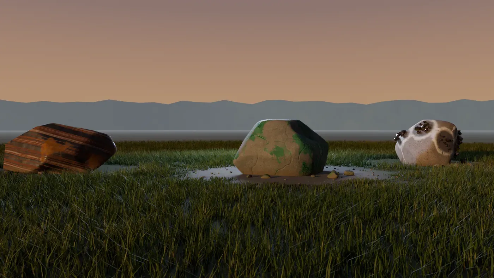

ASHWRIGHT
A DayZ server without NPC traders. You mine ore, smelt it in a furnace you built yourself, forge your own tools and trade with other players. Going solo works too.

From click to first ingot
How you get onto the server and what you do first.
- 1
Sign up
Click “Sign up” in Discord and enter your Steam64 ID. Takes a minute.
- 2
Get admitted
We let players in in waves. When it's your turn, you get the role and a message from me.
- 3
The coast
You start with an emergency bag, a stone pickaxe and a campfire. Nothing more.
- 4
Craft
Find ore, mine it, smelt it, forge it. Sell what you don't need.
Support the server
The mod is free. If you want to help us, you can buy packages that change nothing about the game. Sales begin once the talks with Bohemia Interactive are done.
The handbook
Read up on how the crafting works. Four groups, 14 professions, five quality grades.
Raw materials
4Everything you take from the ground, the forest and the wild.
- Mining
- Prospecting
- Forestry & Resin
- Hunting & Tanning
Refining
5Ore becomes ingots, clay becomes crucibles, silver becomes coins.
- Smelting
- Ceramics & Glass
- Lab
- Farming
- Minter
Making
4At the anvil, the workbench, the building site.
- Smithing
- Gunsmith
- Mechanics
- Building
Outdoors
1 + 5One profession and five skills that improve with practice.
- Survival
- Fitness
- Stealth
- Ranged & melee
- First aid
The five quality grades
- Impurecommon
- Solid
- Pure
- High-purity
- Flawlessrare
Whitelist
At launch only registered players get onto the server, in waves. We're two people and want to be able to help everyone on the first evening instead of drowning in chaos.
- Join the Discord
- Read the rules, there are only seven
- In the “whitelist” channel click Sign up and enter your Steam64 ID (17 digits, you find it on steamid.io)
English and German on the server. Want to be sure you're in? Have a look at the reserved spot.
Questions
When does season 0 start?
As soon as the date is fixed, it will be posted in Discord under announcements. Turn on the ping and you won't miss it.
What does the mod cost?
Nothing. To support us there will be optional packages that change nothing about the game. They're described in the shop preview.
Can I play solo?
Yes. Every chain can be completed alone. A group just gets there faster.
Are there traders or starting money?
No. Everything that exists was made by a player. Trading happens between players.
Do I need the whitelist?
Yes, at launch. You can sign up in Discord.
Does it run on PlayStation or Xbox?
Sorry, no. DayZ mods are PC only.